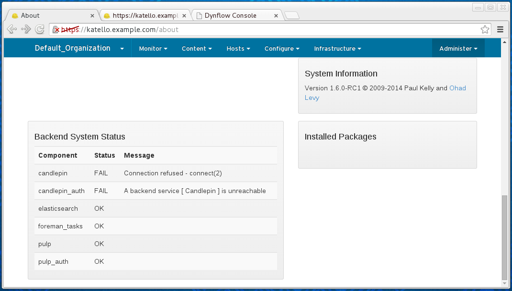
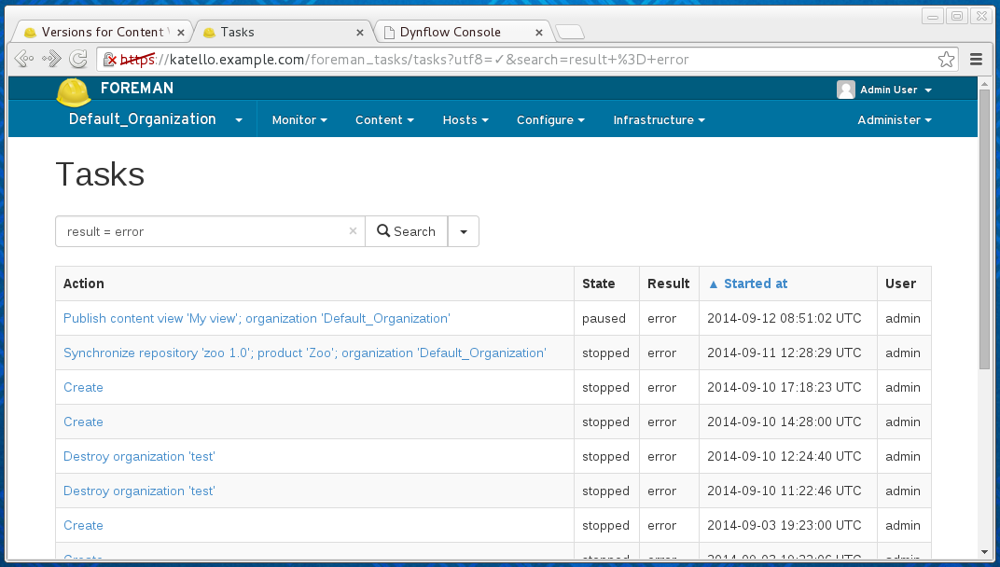
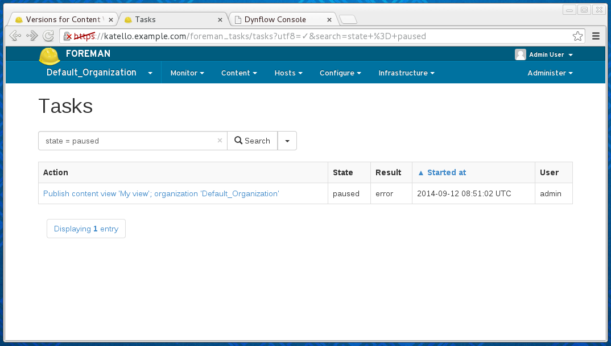
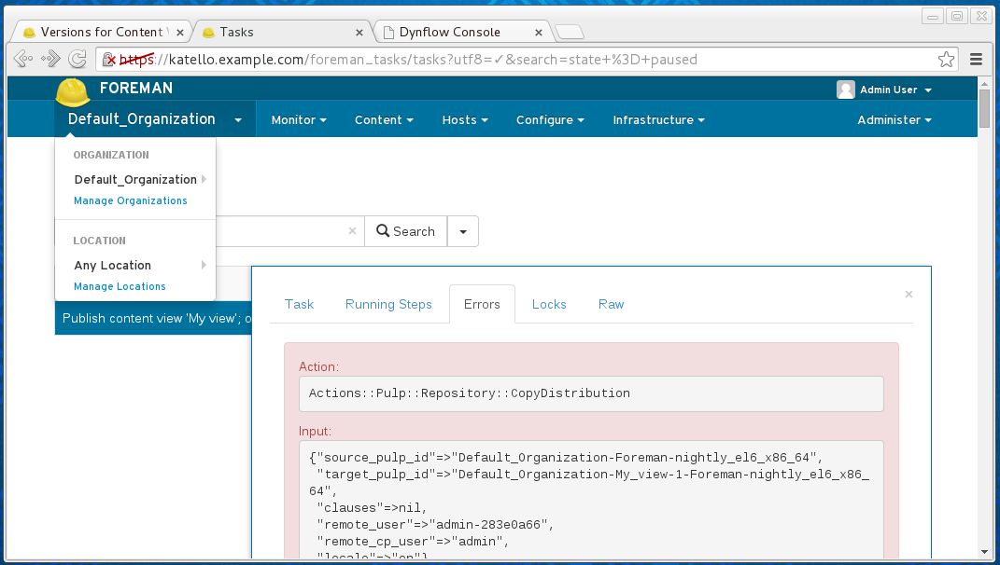
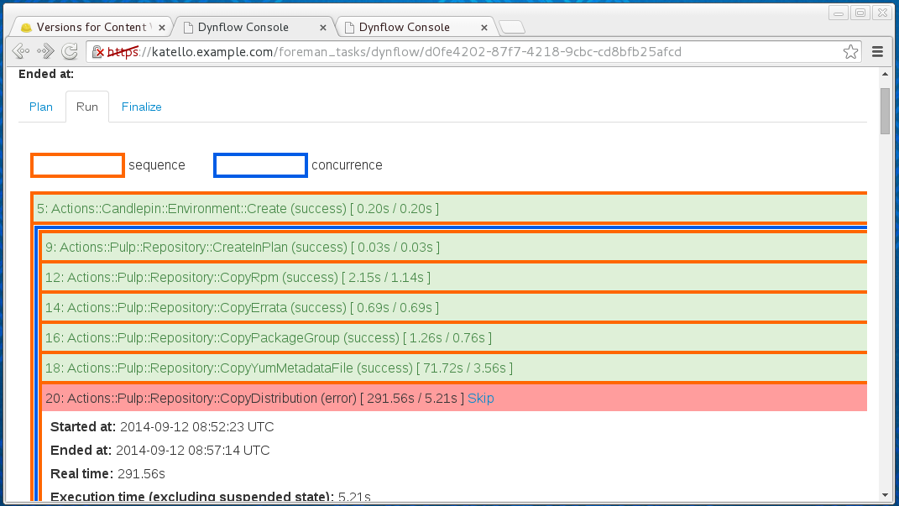
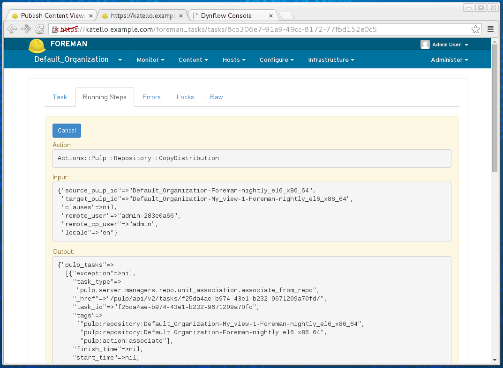
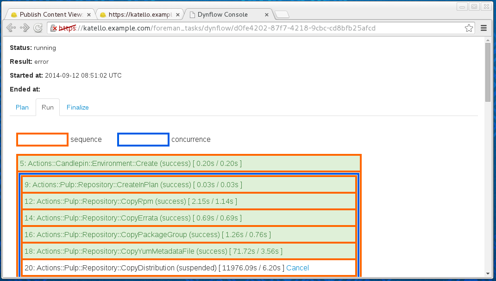
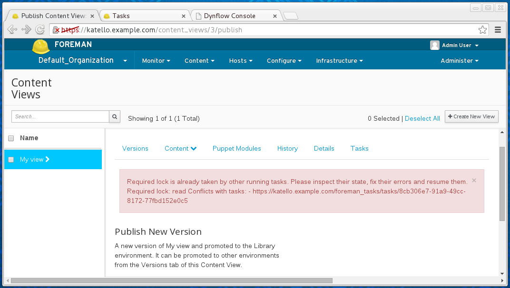

Troubleshooting
Troubleshooting
For general support information, see here.
Sub-services status
Katello uses a set of back-end services to perform the actual job. The status of these services can negatively influence the whole system and it’s one of the first things to check when some errors occur.
The status of back-end services can be found either from the Web UI on the /about page:

Alternatively, the hammer ping command can be used to get this information.
katello-service tool can be used to restart Katello related services. See man katello-service for more details.
Logs
There are multiple log files with potentially valuable data for debugging. The foreman-debug tool can be used to collect these files for further investigation. See man foreman-debug for more details.
Tasks
Katello uses Foreman Tasks for orchestration between the underlying services (local database, Pulp, Candlepin…). The tasks are modeled as Dynflow processes. When something goes wrong (and there might be many reasons for this happening), Dynflow gives us the tools to recover from these errors to get to the consistent state.
Health checking
There are two properties used for identifying issues with a task:
- state - what phase of execution is the task in, possible values are:
- planning - the planning phase of the task is performed: the operations performed in this phase shouldn’t modify anything outside Katello’s database. The execution of this phase happens in the web-process thread and usually should not take more than few seconds
- planned - the planning phase finished and the task is waiting for the executor process (
foreman-tasks service) to pick it up - running - the executor is performing the orchestration action, modifying the state of external services to converge to the final state
- paused - something went wrong during running the task and it’s waiting for the resolution (further details below)
- stopped - the execution of the task finished (the success is determined by the result value)
- result - how the task ended up (or is going to end up if we already know it)
- pending - task is in the process of executing
- success - no errors occurred during the execution
- error - unresolved errors occurred during the execution
- warning - there were errors during the execution, but they did not prevent the task from finishing or were skipped manually (further details below).
To see all the tasks in the system, one can go to /foreman_tasks/tasks page. To see all the tasks that failed, one can search on result = error:

Failed tasks include those in the ‘stopped’ or ‘paused’ state. The stopped tasks are already considered as resolved, there is no risk of inconsistency. The tasks in the ‘stopped’ state and the ‘error’ result are usually those failed during the planning phase (usually locking error or bad input data).
To see all the tasks requiring further assistance, filter on state = paused:

Dealing with paused task
Once the paused task is identified, one can investigate the problem causing the errors:

The resolution of the problem is dependent on the error details. The task may be resolvable by resuming the task: make sure the sub-services are running (see Sub-services status for more details) and then click ‘Resume’ within the web interface.
If this still doesn’t help, one possible step is going to a Dynflow console (the button from task details takes you there):

Caution: Dynflow console is considered a low-level tool and should be used very carefully, ideally discussing other options before using its features
If the failed task was taken care of by other means (performing the failed steps manually) or it was identified as not critical to the whole task, one can skip the failed step and resume the task to continue. These tasks end up with warning result at the end, to indicate there was some difficulty during the run.
Dealing with Long Running Tasks
In came cases, there might be an issue with sub-services that make it appear as if the task is running for too long without any obvious evidence that something is occurring withing the task.
The first place to look in this case is filtering the tasks on state = running and looking at Running Steps in the task details:

In this case, the "start_time" => nil indicates that the task was not picked up by Pulp, which usually means some issues with running the Pulp workers. See (see Sub-services status for more details).
One can also go to the Dynflow console for even more details: the suspended state means that the step is waiting for the external task to finish - the suspended state itself doesn’t have to indicate any error:

If you’re sure the underlying services are running fine, depending on the type of task, there might be a possibility to cancel the running step and possibly following dealing with paused tasks instead.
Locking
Foreman tasks provides a locking mechanism which is important to prevent the possibility of operations colliding that are being performed concurrently on the same resource (such as synchronizing and deleting a repository at the same time).
When trying to run an operation on a resource that another task is already running, one can get Required lock is already taken by other running tasks.:

A locked resource is one where another task that is related to the same resource is already running. Thus, the task being attempted will result in that task being tried in running or paused state. This means that the error is triggered also in cases, where there is a task with unresolved failure (see dealing with paused tasks for more details).
In rare cases, it might be hard to get into the stopped state. There is a possibility to unlock the resource in the running/paused task. This will switch the task into stopped state, freeing the resources for other tasks. Caution: unlocking allows running other tasks to run on potentially inconsistent data, which might lead into further errors. It’s still possible to go to the Dynflow console and resume the tasks, even after using the unlock feature. There are two unlock-related buttons:
Unlock and Force Unlock. The only difference between these two is the second one is allowed even when the task is in running state, and therefore is potentially even more dangerous than the Unlock button. See dealing with tasks running too long before attempting to use the Force Unlock option.